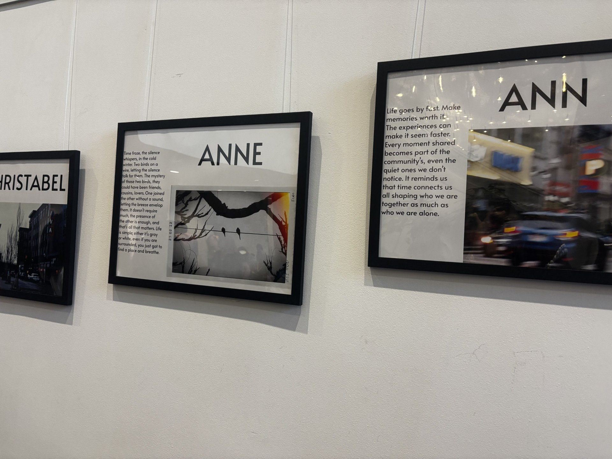
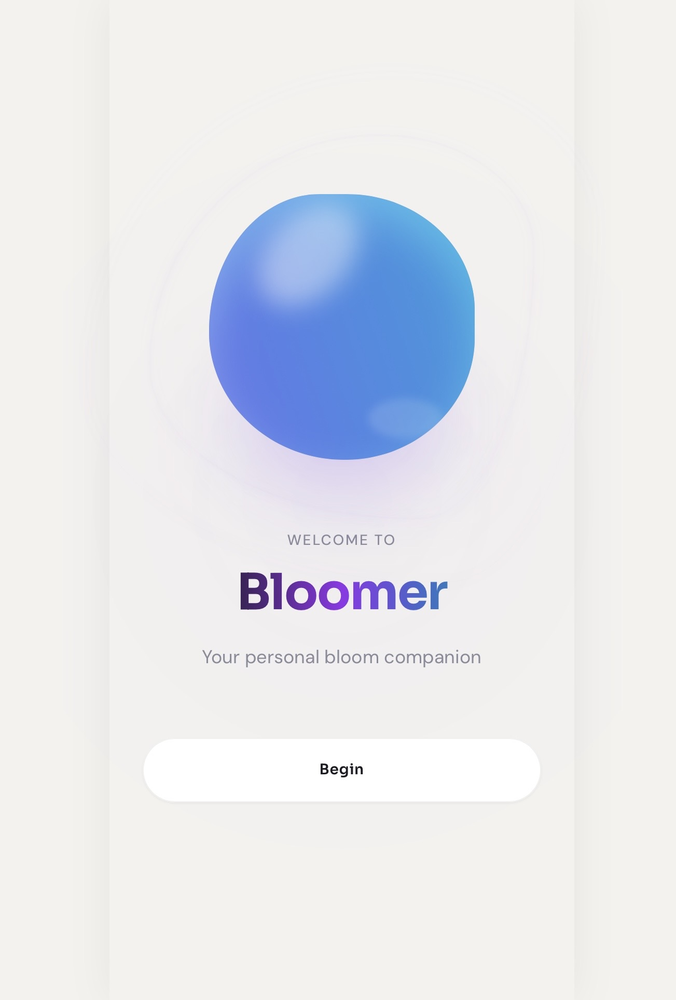
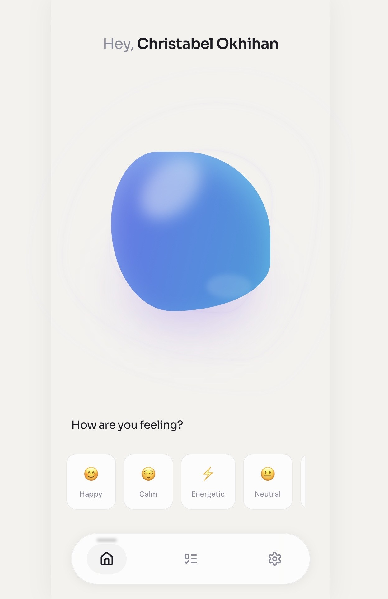
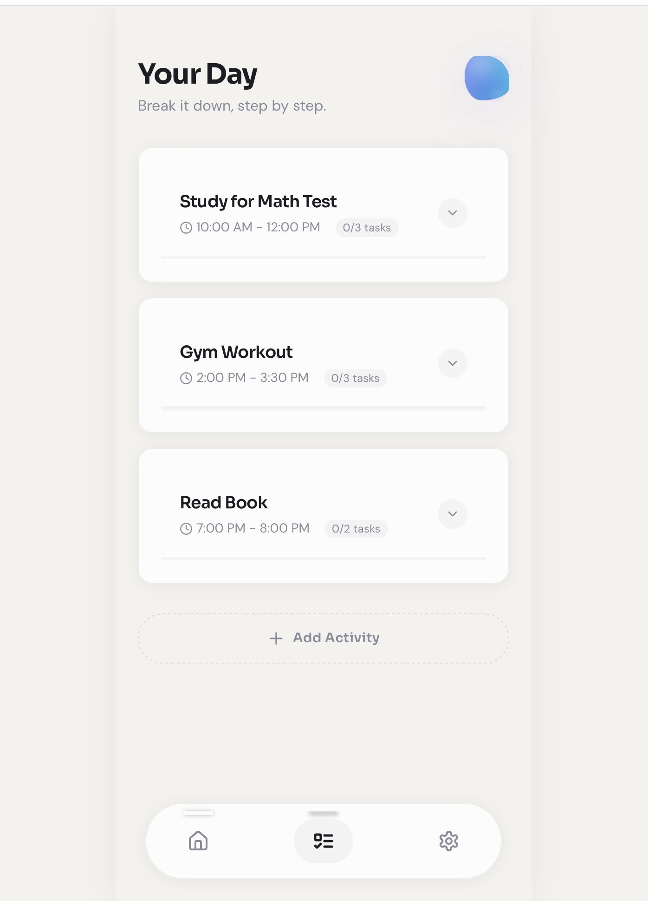
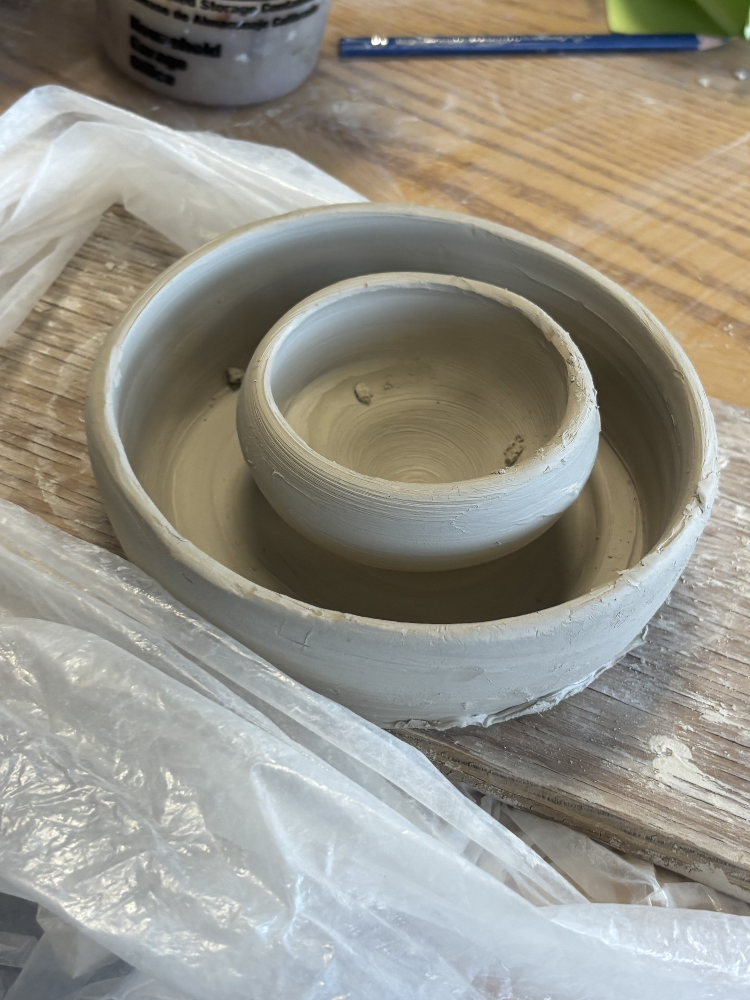
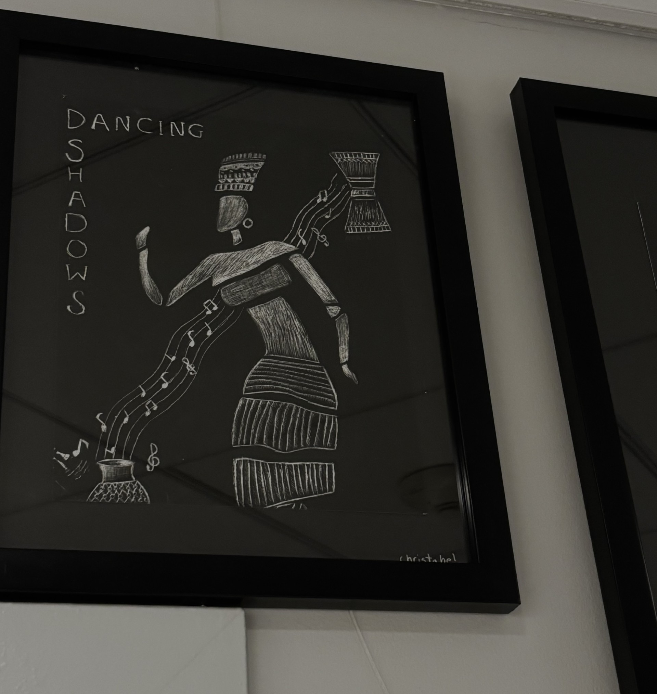

National Honor society art project: The objective of this project was to create an opportunity to kids to experinece art.An event was orgarnized with the help of the National Honor society to create a fun and interactive art experience for kids. The event was held at the malden housing center that catered to the children and featured a variety of art activities, including painting, drawing, and sculpture. The event was a great success, with kids participating and enjoying the activities. The project was a great way to give back to the community and promote creativity and self-expression among young people.
Photovoice program: The photograph program was a collaborative effort to document and share the thoughts and opinions of some of the malden youth. My project was a pitutre taken of the malden public libary and I used it to express the need for more libaries and safe spaces for the comunity. A resource website was built to help the community access information and resources of CHA malden.

Bloomer app (student wellness and productivity app): Bloomer is an app prototype developed for t technovation competition.Our goal was to create a digital space wher students could manage their daily activities, log-in their feelings for the day and journal their thoughts. We built this app with the wellness of teenagers in mind. Bloomer is still a work in progress and it will continue to be devolped.



Bloomer app prototype
Creative projects: Alongside my interest in technology and design, I have engaged in various creative endeavors through hands on art projects. Through my pottery and studio art classes, I have experimented with different materials,techniques and forms of expression. Some of my works includes handmade ceramic pieces, digital art, drawings and writing [Download]

